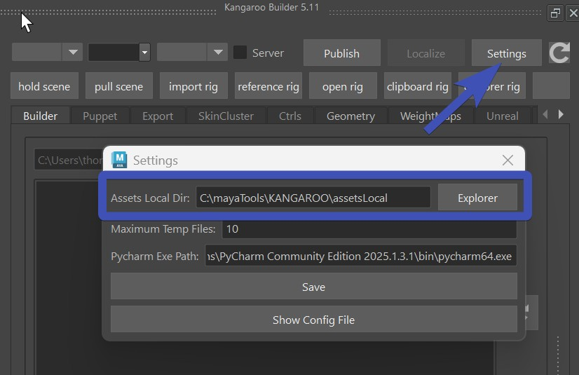

Getting Started
Installation
- Extract the zip file, and copy the content somewhere on disk.
- Drag&Drop the install.mel file into Maya Scene View
- You should see the new KangarooBuilder shelf already.
- Restart Maya
Numpy
If you get an error that numpy is missing, you'll have to install numpy, too. We do that with pip install.
Here we'll explain how to do that in Windows. If you are on Linux or Mac it would be a bit different but similar.
Navigate to your maya installation folder, it will look something like this:
C:\Program Files\Autodesk\Maya2024\bin
./mayapy.exe -m pip install ‐‐user numpy
Note
If you get weird looking errors from mayapy.exe, try without the --user numpy flag
video
If you are struggling with installing numpy, watch this video. In here we already have a Windows explorer open with the location of Maya:
Mac
If you are on a Mac, the mayapy location looks a bit more like this:
/Applications/Autodesk/maya2024/Maya.app/Contents/bin
./mayapy -m pip install numpy
Linux
For some copy/paste options to work, you need to install clip:
sudo dnf install xclip
The Directories
If you just want to use the SkinCluster/Geometry Tools or the Shape Editor or the Picker - you don't need to setup the directories.
But if you want to build characters, there's a little bit of more setup we have to do now.
First of all you need to understand that Kangaroo is not just a Rigging Tool. It's a Rigging Pipeline that helps you also increment/version your assets, and even backup and share with the team.
Note
If you work in a studio where they have their own studio pipeline, then Kangaroo is still another pipeline that runs parallel to the studio pipeline. You can set things up to connect to the studio pipeline at two points:
- grabbing the model from studio pipeline, and later
- publishing the actual rig into the studio pipeline
For more detail see Python - Connecting to Studio Pipeline.
AssetsLocal
First we need to create the AssetsLocal folder. It's the folder where you'll work.
It can be anywhere on your disk drive and doesn't necessarily have to be shared with others.
Just create an empty folder, and specify that by clicking on the Settings button, copy/paste it into
the Assets Local Dir, and click Save:

After changing the settings, Restart Maya.
Then inside that new folder, let's create another empty folder for your project, and name it __MYPROJECT__
It's important that there are 2 underscores before the name, and 2 underscores after the name.
And all has to be UPPERCASE.
Without following those rules, Kangaroo won't recognize the folder as a project.
Environment Variables
You could also specify the assestLocal path with the Environment Variable KANGAROO_WORK_PATH. This can be useful if you are setting up kangaroo for a bigger rigging department
Templates
To start creating characters, 99.95 % of the times you copy from an existing one and adjust. And we usually grab one from the server. Templates is one server that comes with the tool, and has those assets:
- BASEHUMAN
- BASEDOG (digigrade quadruped - dogs, cats, ...)
- BASEHORSE (unguligrade quadruped - horses, deers, ..)
- BASEMOUSE (plantigrade quadruped - mouse, bears, ...)
- BASEBIRD
- BASEPROP
- BASELEGOFIGURE
- THOMAS (BlendShape driven Face Rig)
Let's go to the BASEHUMAN, and then in Export -> NEW, set the project and new asset name, and then click Create:
UPPERCASE/MixedCase
By default it's automatically converting the name to UPPERCASE. It's recommended that you keep it this way
since mixed casing can get ugly in one out of 100 times.
Just imagine one person create "MyCharacter", and one person creates "myCharacter".
But if you need to match the name from a studio pipeline, you have the option to do the dangerous mixed cases name.
AssetsServer
At this point you could theoretically jump to the next tutorial and just start building characters. But you have to setup the server at some point anyway, why not do it now.
You need a server location where you publish the characters to. And that is for one or two things:
- Backup your work
- Sharing with the rigging team
The new server should be on another disk. It could be a folder setup-ed with Smartdrive from Dropbox, Box or GoogleDrive. Or if you are working in a network, it can be a location on the network.
Careful with Smart Drives
Smart Drives are trying to help you by keeping the file storage small - which makes the localizing unstable in some cases.
Therefore If you use Smart Drives, it's best to manually make the version folder (e.g. v3) available offline before localizing. Otherwise
he might not grab all the content without even telling you, and later you'll get confusing errors.
Or if you use Box, localizing might take a very long time without making it available offline first.
Dropbox has been the most stable one so far. Actually with DropBox we don't usually do available offline before localizing, unless
we've just added the folder to synch the last minutes.
If you don't have one yet, just create an empty folder again. And after that, open the pathEnv.mel file with a text editor, and change the path after default@ to be your server path. Important: even in Windows, do not use \ for separating the folders, it all has to be /.
putenv "KANGAROO_SERVER_PATH" "templates@./templates; default@C:/Users/thoma/Dropbox/assetsServer";
Windows
If you copy/paste path in Windows, it'll do the wrong slash! So you have to replace all \ with /.
See how there's a template server defined? This is the template place where we copied character from before. Template is another server.
Environment Variables
The pathEnv.mel file is basically setting the Environment variable. If you are a Pipeline TD you might say this is dirty and messy. But no, this is just a simple way to get you started quickly. If you want to set the Environment Variables in a different way, just comment out those lines with //, and create the Environment variables wherever you prefer. There's even another file example__Maya.env where you can see how you would set it up in a pipeline friendly way
Roadmap for First Character
Once you've setup-ed your directories and started the character with the create NEW tool (explained under Templates above), you are ready to actually rig your character by following the points below!
Keep in Mind!
Always keep in mind that Kangaroo is a procedural tool where we don't
just work on a maya file and send that out when we are done.
Instead we work on the data that in the end creates the character with the RunAll button.
And generally don't get carried away with one maya scene for too long. Always just export and rebuild. And best regularly publish your character so you can track things back easier whenever something's not working.
- Specify Your Model
- Place Blueprint Joints
- Skin the Character, and export weights
- Shape the Ctrls, and export them
- When you click RunAll in the builder, you have your Rig.
Success
Congratulations, you finished your first Character!
But where's the Rig??
After you've published, click the Explorer Rig button.
If you switch to the server with the Server checkbox, the Explorer Rig button would open the location
on the server.
Keep in mind if you got until here, it means you still just scratched the surface of what you can do with Kangaroo. Best keep reading the documentation and see how you can improve your rig with what you've learend.